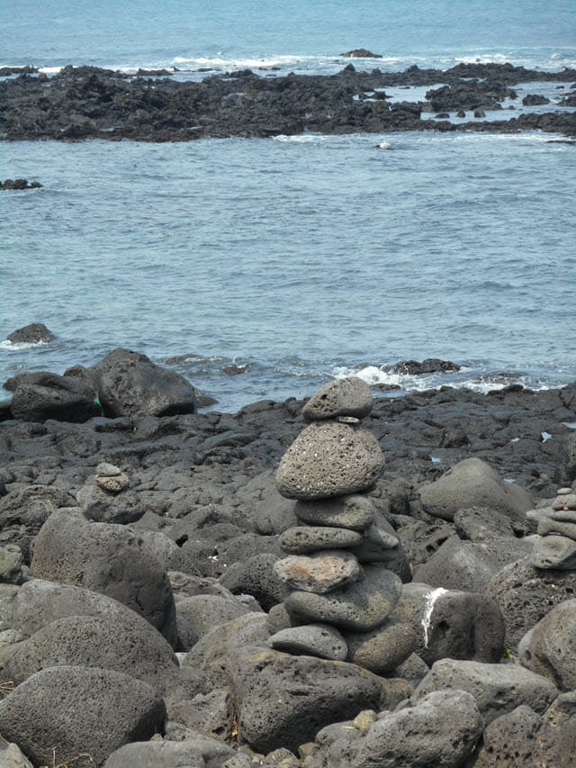

遊覽完岬角上的方斗浦燈塔, 涉地可支的主要景點也遊覽完畢, 而城山的所有行程也宣佈完結了。按計劃, 我們會循東面崖邊的步道離開涉地可支, 在出口附近的餐廳吃午餐, 接著乘計程車返回酒店, 然後乘巴士往濟州市, 也是我們在濟州島最後的一個停留城市。
離開方斗浦燈塔, 循另一條樓梯往下走。
走下山坡, 循涉地可支東面崖邊的步道一直向前走, 沿途風景真是很美。

不時回頭望望岬角上的方斗浦燈塔和海邊的立石岩。
離燈塔愈來愈遠了!
涉地可支東面的波濤十分洶湧, 浪花四濺, 驚心動魄。
經過山坡上的玻璃屋, 設計十分獨特, 二樓是高級餐廳, 我們這些窮旅客負擔不起的, 望望算了。
繼續往前走。
沿途風光相當優美。這邊的旅客很小, 可以很悠閒的欣賞風景, 和細聽海濤拍岸的悅耳音韻。
走了一會, 拐個彎, 看到昨天遠足的牛島。我喜歡坐在海邊靜靜的欣賞風景和思考, 她卻喜歡到岸邊玩耍。
繼續往前走, 石灘上有很多堆疊一起的石頭, 高矮肥瘦, 不同形狀的, 據說是許願用的。

我也堆疊了幾塊石頭, 願望只有一個: 祝她身體健康, 其他的都不需要了。
她也堆疊了幾塊石頭, 和我堆疊的差不多那麼多, 差不多那麼高。
繼續向前走。
沿途都可以看到海中的牛島。
停在海邊的一輛貨車, 好像很有氣勢的!
繼續循海邊步道一直向前走。
涉地可支 水族館
經過一個由幾棟形狀不相同建築物所組成的大型綜合性設施, 不知道是什麼地方。這裡會不會有餐廳呢?